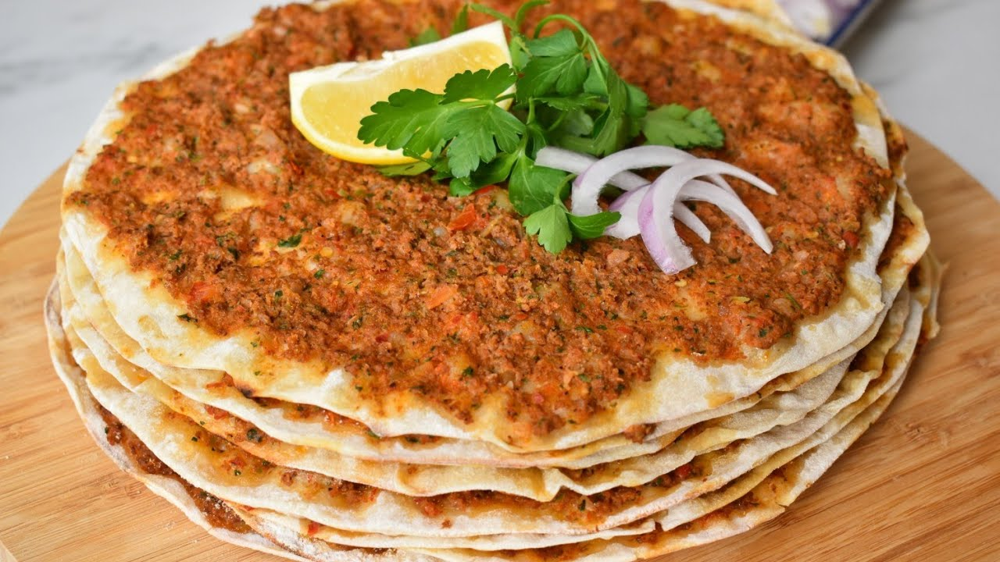
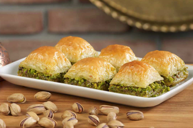
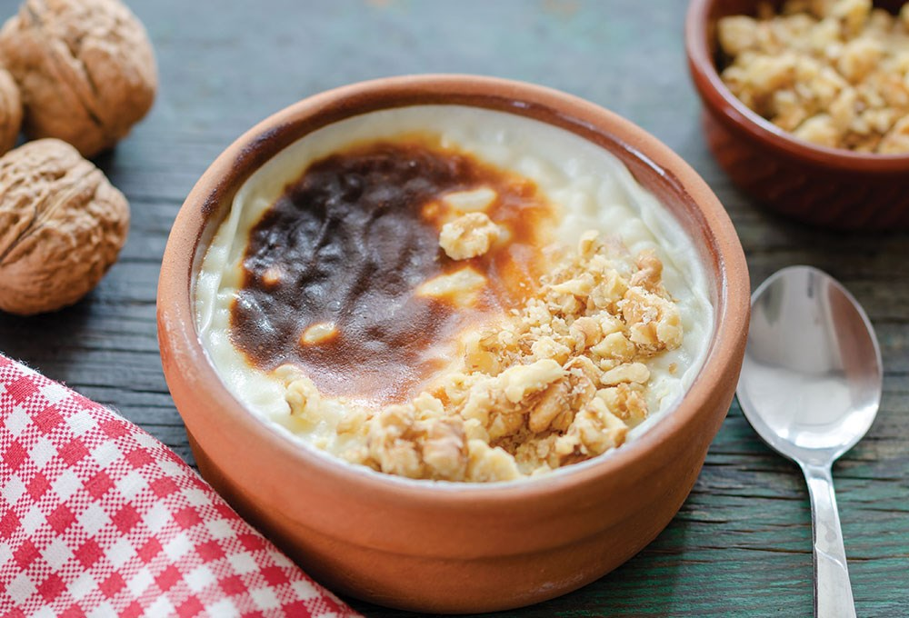
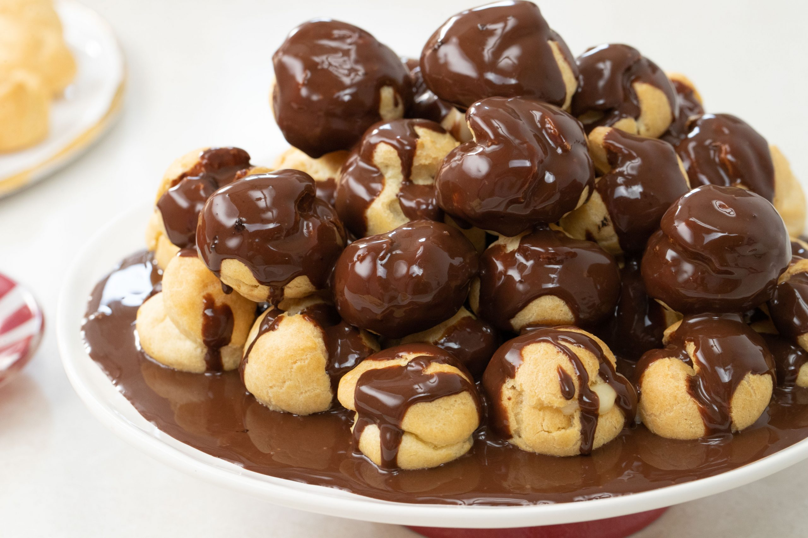
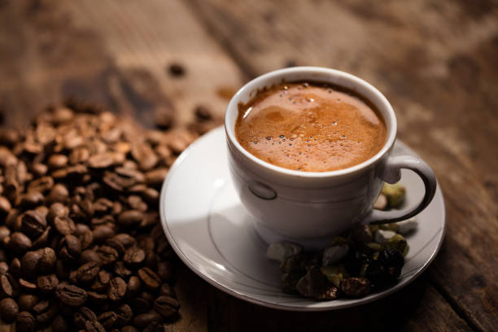
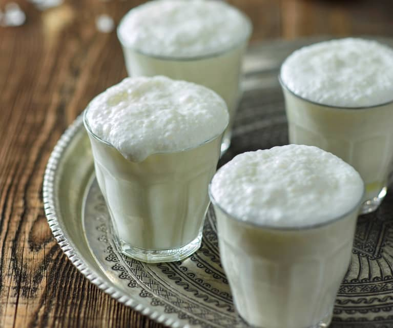

MENÜMÜZDE ANA YEMEK ,TATLI VE İÇECEKLER OLMAK ÜZERE 3 FARKLI SEÇENEK MEVCUTTUR. GÖRSELLERE TIKLADIĞINIZDA İLGİLİ GÖRSELE AİT DETAYLARI GÖREBİLİRSİNİZ AFİYET OLSUN
| ANA YEMEKLER | |
|
 |
|---|---|---|---|
| TATLILAR |  |  |  |
| İÇECEKLER |  |  | |